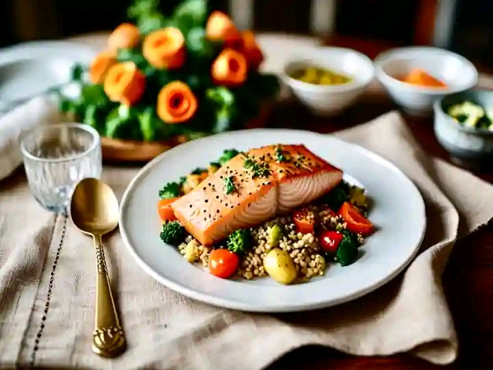
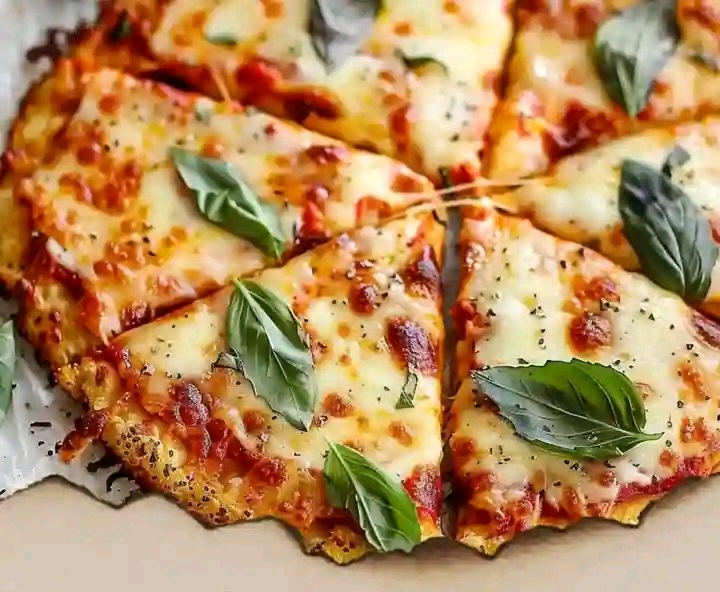

Introduction
Welcome to our guide on healthy dinner ideas and trending recipes. Whether you’re looking to try something new or need inspiration for your next meal, we have gathered a variety of nutritious and delicious options to help you maintain a balanced diet.
Why Choose Healthy Dinner Options?
Eating a healthy dinner is crucial for maintaining energy levels, supporting overall health, and aiding in weight management. Incorporating balanced meals into your dinner routine can also improve digestion and ensure you get a good night's sleep.
Top Healthy Dinner Ideas
1. Grilled Chicken with Quinoa and Vegetables
This protein-packed meal is simple to prepare and full of nutrients. Pair grilled chicken with quinoa and a variety of steamed vegetables for a balanced dinner.
2. Baked Salmon with Sweet Potato and Broccoli
Baked salmon is rich in omega-3 fatty acids and pairs perfectly with roasted sweet potatoes and steamed broccoli.
3. Veggie Stir-Fry with Brown Rice
A quick and easy option, this veggie stir-fry is loaded with colorful vegetables and served over brown rice for a fiber-rich meal.
4. Lentil Soup with Whole Grain Bread
Lentil soup is hearty and satisfying, packed with protein and fiber. Serve with a slice of whole grain bread for a complete meal.
Trending Healthy Recipes
Cauliflower Pizza Crust
This low-carb alternative to traditional pizza crust is a hit among health enthusiasts. It's gluten-free and can be topped with your favorite veggies and lean proteins.
Ingredients:
- 1 head cauliflower, riced
- 1 egg, beaten
- 1 cup mozzarella cheese, shredded
- 1/4 cup Parmesan cheese, grated
- 1 teaspoon Italian seasoning
- Salt and pepper to taste
- Your choice of toppings (e.g., tomato sauce, vegetables, lean meats)
Instructions:
- Preheat oven to 425°F (220°C). Line a baking sheet with parchment paper.
- Rice the cauliflower using a food processor or grater, then microwave it for 5-8 minutes until soft. Let it cool.
- In a bowl, combine the cauliflower, egg, mozzarella, Parmesan, Italian seasoning, salt, and pepper. Mix well.
- Spread the mixture onto the prepared baking sheet and shape it into a pizza crust. Bake for 15-20 minutes until golden brown.
- Add your favorite toppings and bake for an additional 10 minutes.
Zucchini Noodles with Pesto
Zucchini noodles, or zoodles, are a fantastic low-carb substitute for pasta. Toss them with homemade pesto for a light and flavorful dinner.

Ingredients:
- 2 large zucchinis, spiralized
- 1 cup fresh basil leaves
- 1/4 cup pine nuts
- 1/4 cup Parmesan cheese, grated
- 2 cloves garlic
- 1/2 cup olive oil
- Salt and pepper to taste
Instructions:
- Spiralize the zucchinis to create zoodles. Set aside.
- In a food processor, combine basil, pine nuts, Parmesan, garlic, salt, and pepper. Pulse until finely chopped.
- With the processor running, slowly add olive oil until the mixture is smooth.
- Toss the zoodles with the pesto until well coated. Serve immediately.
Tips for Preparing Healthy Dinners
- Plan Ahead: Create a weekly meal plan to ensure you have healthy ingredients on hand.
- Prep in Advance: Prepare ingredients ahead of time to make dinner preparation quicker and easier.
- Portion Control: Be mindful of portion sizes to avoid overeating.
- Include All Food Groups: Aim to include a balance of protein, carbohydrates, and fats in your meals.
- Stay Hydrated: Drink plenty of water with your meals.
Conclusion
Incorporating healthy dinner ideas and trending recipes into your routine can help you maintain a balanced diet and support your overall wellness. Experiment with the recipes provided, and don't be afraid to try new ingredients and cooking methods.